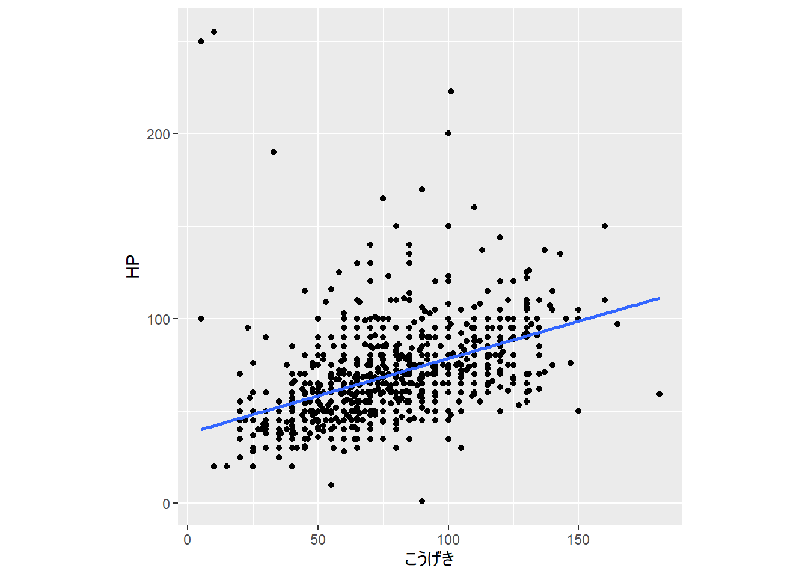
Week6: 単回帰分析（連続型の説明変数）
事前の確認
この講義のRプロジェクトを開いていますか？
英数字で名前を付けた本日の講義のファイルを作成しましたか？
- .Rでも.Rmdでもどちらでも大丈夫です。
今日の目標
- 回帰分析の統計理論を数学的・概念的に理解できる
- 回帰分析（独立変数が連続値）をRで実装し、その結果を可視化などを通して説明できる
回帰分析（regression analysis）とは
データに回帰直線をあてはめ、そこから得られた予測値や残差をもとにデータを解釈する方法
- 青い線が回帰直線
回帰分析の種類
線形モデル（Linear Model）
- 正規分布を仮定
- 最小二乗法で推定
一般化線形モデル（generalized linear model）
- 正規分布以外を仮定できる
- 最尤推定法で推定
一般化線形混合（効果）モデル（generalized linear mixed model）
- 正規分布以外を仮定でき、個体差や場所差などを考慮に入れる
- 最尤推定法で推定
変数の名前
独立変数（independent variable）：説明変数や予測変数とも呼ばれる。予測に用いられる変数 x
従属変数（dependent variable）：目的変数や基準変数とも呼ばれる。予測される方の変数 y
最小二乗法
以下の一次式で表される
[ = a + bx ]
傾き（ b ）：変数 x の1単位の差異に対応する y の予測値の差異の大きさ。回帰係数（regression coefficient） とも呼ばれる。
- 変数 x の単位を把握しておくことが重要。標準化すると、1標準偏差あたりに変換できる
切片（ a ）
回帰直線が実際のデータに最もよく適合するように計算される。計算方法として最小2乗法（least squares method）が1例としてあげられる。
[ b = r ]
[ a = - b{x} ]
- 回帰直線の式に上記の式を代入。x が平均 ({x}) に等しいとき、 y の予測値 () は y の平均 ({y}) に等しくなる。= 回帰直線は、点（({x}), ({y})）を通る傾き b の直線
[ = ({y} - b{x}) + bx\ = {y} + b(x - {x}) ]
最小2乗法以外にも最尤推定法があり、前者は手元のデータに当てはめることを考え、後者はこのデータが出てくる確率が一番高くなるように、確率分布のパラメータを考える。どちらの基準を用いても推定値はほぼ同じ値になる。誤差が独立していて、正規分布していれば、最小二乗法と最尤推定は等価になる。最尤推定法は正規分布以外の確率分布にも適用できるため、最尤推定法の方がより用いられる（最小2乗法は2つの変数の直接的な関係を仮定するため、線形ではない回帰モデルでは最小2乗法が使えない場合がある）。
- 最小二乗法：
lm関数
stats::lm(mtcars$mpg ~ mtcars$cyl, weights = NULL)
Call:
stats::lm(formula = mtcars$mpg ~ mtcars$cyl, weights = NULL)
Coefficients:
(Intercept) mtcars$cyl
37.885 -2.876 最尤推定法：
glm関数- iteratively reweighted least squaresを用いて最尤推定している
stats::glm(mtcars$mpg ~ mtcars$cyl)
Call: stats::glm(formula = mtcars$mpg ~ mtcars$cyl)
Coefficients:
(Intercept) mtcars$cyl
37.885 -2.876
Degrees of Freedom: 31 Total (i.e. Null); 30 Residual
Null Deviance: 1126
Residual Deviance: 308.3 AIC: 169.3ベイズ推定
最尤法の代わりに使う方法。
最小2乗法、最尤推定法：「点」を推定 => 1つの値を返す
ベイズ推定：「幅」（分布）を推定。事後分布を返す。この分布の一番高い個所を「点」として報告することもできる
マルコフ連鎖モンテカルロ法（MCMC）によって得られた乱数のサンプルを使って推定する。
res <- rstanarm::stan_glm(
mpg ~ cyl,
seed = 123,
data = mtcars,
refresh = 0
) #priors weakly informative by default
summary(res)
Model Info:
function: stan_glm
family: gaussian [identity]
formula: mpg ~ cyl
algorithm: sampling
sample: 4000 (posterior sample size)
priors: see help('prior_summary')
observations: 32
predictors: 2
Estimates:
mean sd 10% 50% 90%
(Intercept) 37.9 2.2 35.0 37.9 40.6
cyl -2.9 0.3 -3.3 -2.9 -2.4
sigma 3.3 0.4 2.8 3.3 3.9
Fit Diagnostics:
mean sd 10% 50% 90%
mean_PPD 20.1 0.8 19.0 20.1 21.1
The mean_ppd is the sample average posterior predictive distribution of the outcome variable (for details see help('summary.stanreg')).
MCMC diagnostics
mcse Rhat n_eff
(Intercept) 0.0 1.0 3670
cyl 0.0 1.0 3563
sigma 0.0 1.0 2742
mean_PPD 0.0 1.0 3683
log-posterior 0.0 1.0 1537
For each parameter, mcse is Monte Carlo standard error, n_eff is a crude measure of effective sample size, and Rhat is the potential scale reduction factor on split chains (at convergence Rhat=1).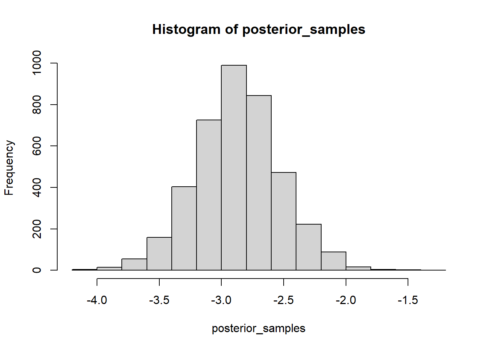
ベイズ推定では、事前分布を指定する。つまり、最小2乗法や最尤推定法を使う場合と異なり、得られたデータだけでなく、事前の知識を反映して分析できる。
- 変数 xにより狭い事前分布を設定平均が0、標準偏差が0.2
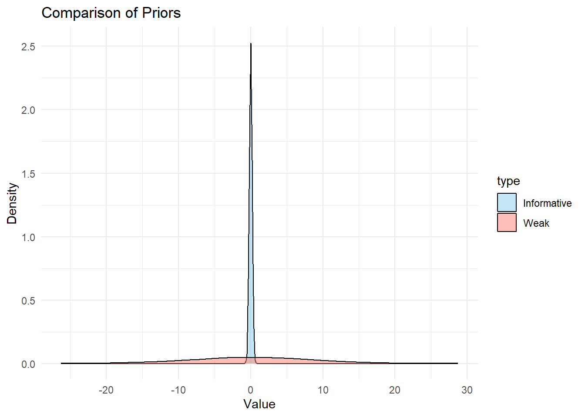
Model Info:
function: stan_glm
family: gaussian [identity]
formula: mpg ~ cyl
algorithm: sampling
sample: 4000 (posterior sample size)
priors: see help('prior_summary')
observations: 32
predictors: 2
Estimates:
mean sd 10% 50% 90%
(Intercept) 22.1 1.6 20.0 22.2 24.2
cyl -0.3 0.2 -0.6 -0.3 -0.1
sigma 5.7 0.8 4.7 5.6 6.7
Fit Diagnostics:
mean sd 10% 50% 90%
mean_PPD 20.1 1.4 18.3 20.1 21.9
The mean_ppd is the sample average posterior predictive distribution of the outcome variable (for details see help('summary.stanreg')).
MCMC diagnostics
mcse Rhat n_eff
(Intercept) 0.0 1.0 2937
cyl 0.0 1.0 2991
sigma 0.0 1.0 2402
mean_PPD 0.0 1.0 3316
log-posterior 0.0 1.0 1638
For each parameter, mcse is Monte Carlo standard error, n_eff is a crude measure of effective sample size, and Rhat is the potential scale reduction factor on split chains (at convergence Rhat=1).異なる事前分布を持つ回帰モデルから得られた事後分布の描画
より狭い事前分布をおくと、事前分布が推定に与える影響が、広い事前分布の場合より大きくなる。
- 広い、狭い = 標準偏差の大きさ
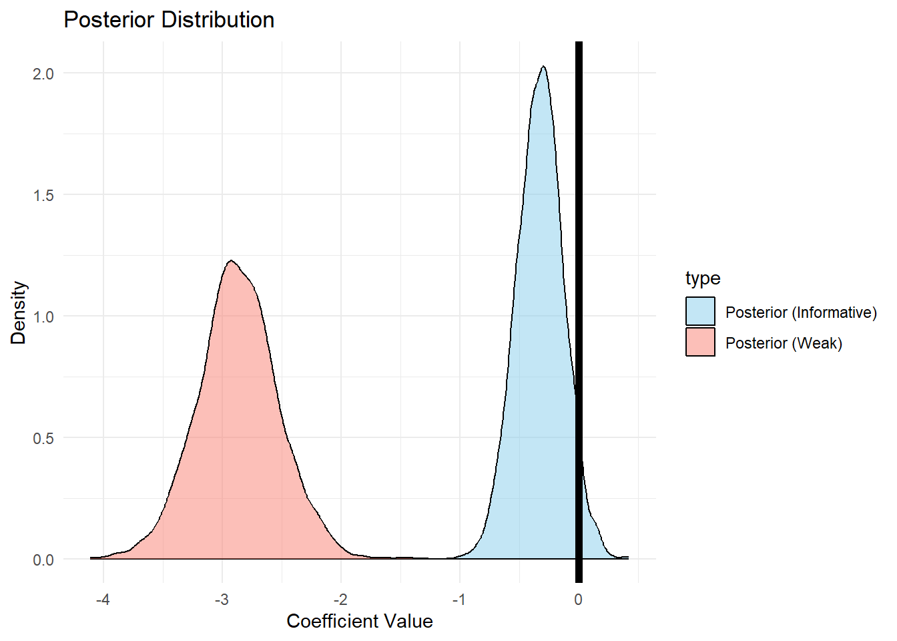
注 事前分布を狭く指定しない場合、頻度統計の結果もベイズ統計の結果も近似する。
- ベイズ推定では、事前分布の設定を行ったり、サンプリングが適切に行われたかを確認する手順が必要である。今回は推定の紹介だけで、今後詳しい設定法などに言及する。
回帰分析における予測値と残差
残差（residual）：予測の誤差ともいう。それぞれの観測値と直線の差のこと。つまり、(e = y - ) 。
残差の平均は0
残差と変数 x の相関は0
予測値 () と残差の相関は0
- 予測値は変数 x を線形下もので、相関係数の絶対値は変わらないから
前のセクションで述べた 最小2乗法は残差を2乗して足し合わせた残差平方和が最小になるように計算を行う
デモ
- HPを従属変数、こうげきを独立変数として単回帰分析を実行し、resという変数に格納する
res <- stats::lm(dat$HP ~ dat$こうげき)
Call:
stats::lm(formula = dat$HP ~ dat$こうげき)
Residuals:
Min 1Q Median 3Q Max
-73.432 -13.565 -3.125 8.740 212.873
Coefficients:
Estimate Std. Error t value Pr(>|t|)
(Intercept) 38.08851 2.15454 17.68 <0.0000000000000002 ***
dat$こうげき 0.40381 0.02625 15.38 <0.0000000000000002 ***
---
Signif. codes: 0 '***' 0.001 '**' 0.01 '*' 0.05 '.' 0.1 ' ' 1
Residual standard error: 23.32 on 895 degrees of freedom
Multiple R-squared: 0.2092, Adjusted R-squared: 0.2083
F-statistic: 236.7 on 1 and 895 DF, p-value: < 0.00000000000000022- 残差の平均を計算
mean(res$residuals)[1] -0.0000000000000008983663- 残差と変数 x の相関を計算
cor(res$residuals, dat$こうげき)[1] -0.000000000000000009412816- 残差と予測値の相関を計算
cor(res$residuals, res$fitted.values)[1] 0.000000000000000144472R で計算すると、理論的には 0 になるはずの値が浮動小数点演算の誤差により完全に 0 にならないことがあります(参考)。
変数の直行分解と残差の意義
- 残差の式は以下のように書き換えられる。
[ y = + e ]
前のセクションで示したように、右辺の二つは無相関である。従って、従属変数を無相関の成分に分解する式であると言える（相関がない2変数を「互いに直交する」ともいう）。つまり、上記の式は、直行分解の式である。
独立変数と残差が無相関であるという性質により、「従属変数 yの成分のうち、独立変数 x とは相関の無い残差成分」を取り出すことが可能になる。
つまり、残差は単なるズレではなく、従属変数のうち独立変数とは関係しない部分を表している
Note
残差と誤差は異なる。「誤差」は求めようとする真の回帰式（母集団などのように神様しか知らない）から算出される値と実際のデータとの差を表す。真の回帰式は理論的なものであるため誤差を計算では求められない。「残差」は実際のデータを用いて推定された回帰式から算出される値と実際のデータとの差を指し、計算で求められる。
ポケモンのHPとこうげきの例
- ポケモンのHPをこうげき変数で予測する（「こうげき」の値が大きいポケモンはHPも高そう）
当該ポケモンのこうげき：
150当該ポケモンのHP：
105
残差は「HPのうち、こうげきでは説明できない成分」
- 残差が正の大きな値：「こうげきから予測されるレベルよりもHPがかなり高いポケモン」
- HPの平均と当該ポケモンのHP
[1] 68.99666[1] 255- こうげきの平均と当該ポケモンのこうげき
[1] 76.54069[1] 10- 残差が負の大きな値：「こうげきから予測されるレベルよりもHPがかなり低いポケモン」
- HPの平均と当該ポケモンのHP
[1] 68.99666[1] 1- こうげきの平均と当該ポケモンのこうげき
[1] 76.54069[1] 90残差（変数）はHPそのものとは意味内容が異なる（「こうげきから予測されるHPよりも高いか低いか」を示している）。HPそのものが高いポケモンでも、こうげきが高ければ残差の値は大きくならない。また、HPそのものが低くても、こうげきのわりにはHPが高ければ残差は大きくなる。
残差に注目することで、もともとの変数間の関係を調べるだけでは知ることのできなかったより本質的な関係が明らかになる可能性がある。
- 別の変数の存在を考えたりなど
回帰直線の当てはまりの良さ
- 相関係数の2乗のことを分散説明率とよぶことがある。また、独立変数がどれだけ従属変数の値を決定するかを表していることから、決定係数（coefficient of determination: (R^{2})）とも呼ばれる。高いほどよい（高すぎても予測の点から問題はある）。
[ R^{2} = 1 - ]
(SS_e)：残差の2乗和
(SS_y)：目的変数の偏差2乗和
0-1（0-100%）の間の値をとる
調整済決定係数（Adjusted R-squared）：独立変数の数が多い場合、その影響の大きさに関わらず、決定係数が大きくなる。その欠点を補ったもの
summary(res)
Call:
stats::lm(formula = dat$HP ~ dat$こうげき)
Residuals:
Min 1Q Median 3Q Max
-73.432 -13.565 -3.125 8.740 212.873
Coefficients:
Estimate Std. Error t value Pr(>|t|)
(Intercept) 38.08851 2.15454 17.68 <0.0000000000000002 ***
dat$こうげき 0.40381 0.02625 15.38 <0.0000000000000002 ***
---
Signif. codes: 0 '***' 0.001 '**' 0.01 '*' 0.05 '.' 0.1 ' ' 1
Residual standard error: 23.32 on 895 degrees of freedom
Multiple R-squared: 0.2092, Adjusted R-squared: 0.2083
F-statistic: 236.7 on 1 and 895 DF, p-value: < 0.00000000000000022回帰係数の有意性
- 帰無仮説（独立変数の係数が0）を t 分布をもとに検定
回帰分析を使う際の注意点
係数の数値は”Effects”ではなく、“Comparison”
「係数がXXという数値が得られた。従って、ZZ増えると、変数 y は上がる/下がる」という主張は、不正確な場合がほとんど。回帰分析は「説明」と「予測」のどちらにも用いられるが、変数 x から変数 y への→を（「説明」）主張するにはその他の手続きが必要となる。
- 予測（実用的）：応用的な状況で有用な意思決定を行うために結果や行動の予測する
- 説明（理論的）：理論の検証や発展のために現象の性質を理解したり説明したりする
決定係数の値が高く、よく適合していることと、そのモデル内の回帰係数が「因果効果の良い推定値」かどうかは、本質的には別の問題
予測変数と目的変数に線形の関係がある
十分なサンプルサイズが必要
- 検定力分析で事前に決定する
外れ値がないか
残差の独立性があるか
- 残差に相関がある場合、残差の独立性が満たされていない
- 時系列など時間に関わるデータはこれが満たされない場合が多い（株価のデータなど）
残差の等分散性があるか
- 残差に何らかの傾向があるとモデルが誤っていると判断する
残差が正規分布しているか
- 回帰モデルは独立変数が正規分布していることを前提としていない。また、従属変数が正規分布していることを仮定しているわけではなく、残差が正規分布していることを仮定している。
ハンズオンセッション
データの読み込み
- 英語テストの得点が従属変数、独立変数が英語学習歴の長さ
dat <- read.csv("sample_data/simp_reg.csv")読み込んだデータの確認
head(dat, 5) student mid end quiz
1 S001 77 NA 36
2 S002 54 47 28
3 S003 73 65 31
4 S004 63 60 26
5 S005 44 62 24- 記録されていないデータ（セルにNA）がないかを確認する
stats::complete.cases(dat) [1] FALSE TRUE TRUE TRUE TRUE TRUE TRUE TRUE TRUE TRUE TRUE TRUE
[13] TRUE TRUE TRUE TRUE TRUE TRUE TRUE TRUE TRUE TRUE TRUE TRUE
[25] TRUE TRUE TRUE TRUE TRUE TRUE TRUE TRUE TRUE TRUE TRUE TRUE
[37] TRUE TRUE TRUE TRUE TRUE TRUE TRUE TRUE TRUE TRUE TRUE TRUE
[49] TRUE TRUE TRUE TRUE TRUE TRUE TRUE TRUE TRUE TRUE TRUE TRUE
[61] TRUE TRUE TRUE TRUE TRUE TRUE TRUE TRUE TRUE TRUE TRUE TRUE
[73] TRUE TRUE TRUE TRUE TRUE TRUE TRUE TRUE TRUE TRUE TRUE TRUE
[85] TRUE TRUE TRUE TRUE TRUE TRUE TRUE TRUE TRUE TRUE TRUE TRUE
[97] TRUE TRUE TRUE TRUEsubset(dat, complete.cases(dat) == FALSE) student mid end quiz
1 S001 77 NA 36- NAが入っている行を削除
dat.2 <- stats::na.omit(dat)- 削除されているか再度確認
subset(dat.2, complete.cases(dat.2) == FALSE)[1] student mid end quiz
<0 rows> (or 0-length row.names)summary(dat) student mid end quiz
Length:100 Min. :16.00 Min. : 5.00 Min. : 3.00
Class :character 1st Qu.:46.75 1st Qu.:46.50 1st Qu.:20.00
Mode :character Median :57.00 Median :57.00 Median :26.00
Mean :56.91 Mean :54.21 Mean :26.61
3rd Qu.:68.25 3rd Qu.:64.50 3rd Qu.:33.25
Max. :92.00 Max. :92.00 Max. :49.00
NA's :1 - 散布図で外れ値がないかを確認。
par(pty="s")を実行することで、正方形の図として描画される。
par(pty="s")
plot(dat.2$mid, dat.2$end,
xlim = c(0, 100),
ylim = c(0, 100),
xlab = "Mid-term",
ylab = "Final",
)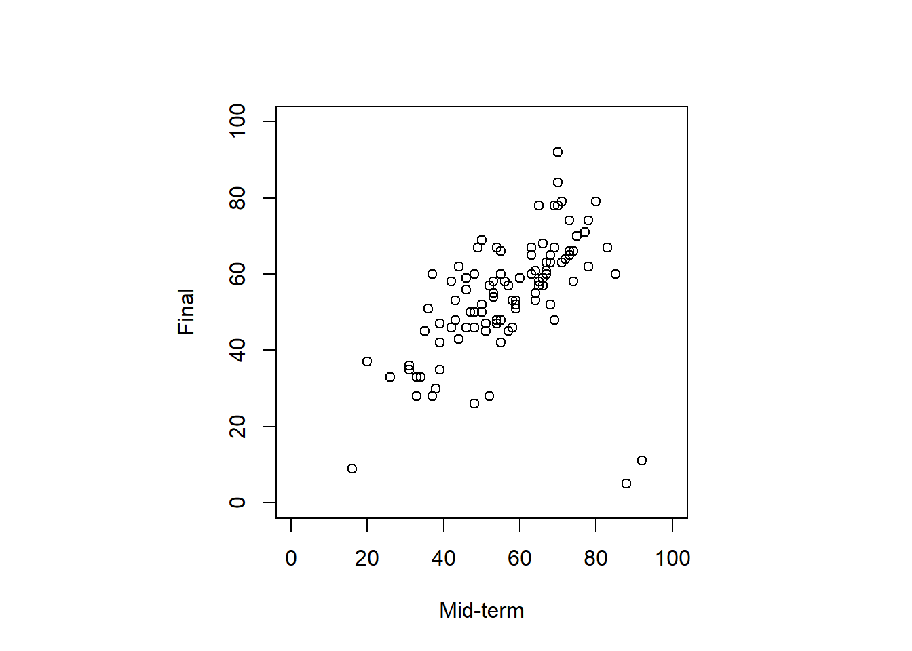
- 外れ値
- データの大部分の傾向と異なるもので、必ずしも誤りとは限らないが、データ集計や分析の際にその存在が結果の精度を悪化させる可能性があるもの。
- 何を外れ値とするかは研究の目的やデータ収集の状況による。今回はマハラノビスの距離を用いて、行う例を紹介する。
d <- stats::mahalanobis(dat.2[,2:3], apply(dat.2[,2:3], 2, mean), stats::cov(dat.2[, 2:3]))n <- nrow(dat.2)
v <- ncol(dat.2[, 2:3])
outliers <- n * (n - v) / ((n ^ 2 - 1) * v) * d > qf(0.9, n, v)par(pty="s")
plot(dat.2[, 2:3],
pch = ifelse(outliers, 16, 21),
xlim = c(0, 100),
ylim = c(0, 100),
xlab = "Mid-term",
ylab = "Final"
)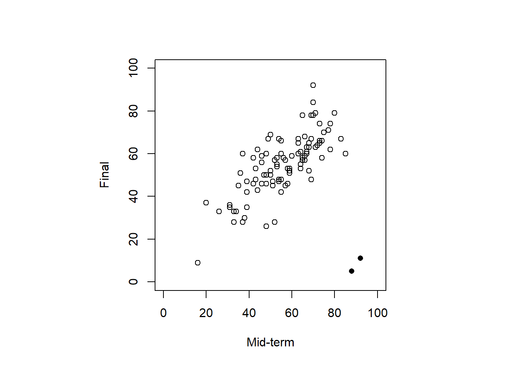
- 外れ値の除去
dat.3 <- dat.2[-which(outliers == TRUE),]par(pty="s")
plot(dat.3[, 2:3],
xlim = c(0, 100),
ylim = c(0, 100),
xlab = "Mid-term",
ylab = "Final"
)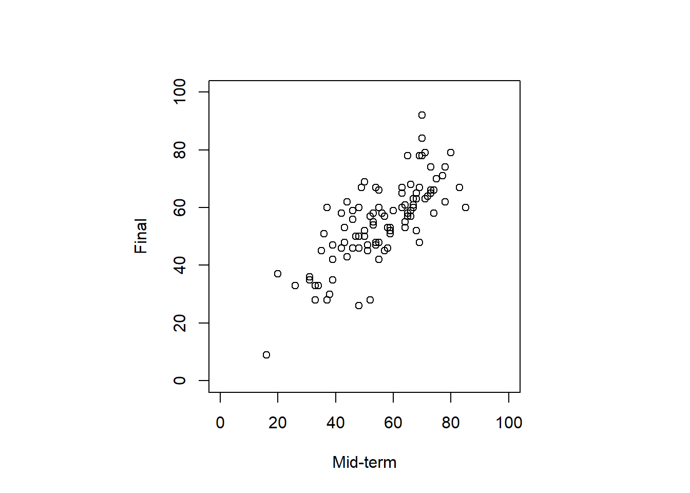
変数間の相関の確認
stats::cor(x = dat.3$mid, y = dat.3$end)[1] 0.7532885回帰分析の実施
- 最小二乗法
model.ls <- stats::lm(end ~ mid, data = dat.3)summary(model.ls)
Call:
stats::lm(formula = end ~ mid, data = dat.3)
Residuals:
Min 1Q Median 3Q Max
-24.2474 -5.4599 -0.7961 5.0888 26.6908
Coefficients:
Estimate Std. Error t value Pr(>|t|)
(Intercept) 14.5133 3.7623 3.858 0.000208 ***
mid 0.7257 0.0650 11.164 < 0.0000000000000002 ***
---
Signif. codes: 0 '***' 0.001 '**' 0.01 '*' 0.05 '.' 0.1 ' ' 1
Residual standard error: 9.314 on 95 degrees of freedom
Multiple R-squared: 0.5674, Adjusted R-squared: 0.5629
F-statistic: 124.6 on 1 and 95 DF, p-value: < 0.00000000000000022- 最尤推定法
model.mlm <- stats::glm(end ~ mid, data = dat.3)summary(model.mlm)
Call:
stats::glm(formula = end ~ mid, data = dat.3)
Coefficients:
Estimate Std. Error t value Pr(>|t|)
(Intercept) 14.5133 3.7623 3.858 0.000208 ***
mid 0.7257 0.0650 11.164 < 0.0000000000000002 ***
---
Signif. codes: 0 '***' 0.001 '**' 0.01 '*' 0.05 '.' 0.1 ' ' 1
(Dispersion parameter for gaussian family taken to be 86.74516)
Null deviance: 19051.4 on 96 degrees of freedom
Residual deviance: 8240.8 on 95 degrees of freedom
AIC: 712.16
Number of Fisher Scoring iterations: 2- 決定係数
r_2 <- 1 - model.mlm$deviance/model.mlm$null.deviance
r_2[1] 0.5674435#install.packages("performance")
performance::r2(model.mlm) R2: 0.567- 自由度調整済決定係数
[ 1 - (1-R^2) ]
n <- nrow(dat.3)
p <- length(coef(model.mlm)) -1 # 切片を抜いた変数の数
1 - ((1 - r_2) * (n - 1)) / (n - p - 1)[1] 0.5628903- ベイズ推定
model.b <- rstanarm::stan_glm(end ~ mid, data = dat.3, refresh = 0, seed = 123)summary(model.b)
Model Info:
function: stan_glm
family: gaussian [identity]
formula: end ~ mid
algorithm: sampling
sample: 4000 (posterior sample size)
priors: see help('prior_summary')
observations: 97
predictors: 2
Estimates:
mean sd 10% 50% 90%
(Intercept) 14.4 3.8 9.6 14.5 19.2
mid 0.7 0.1 0.6 0.7 0.8
sigma 9.4 0.7 8.6 9.4 10.3
Fit Diagnostics:
mean sd 10% 50% 90%
mean_PPD 55.1 1.4 53.4 55.1 56.9
The mean_ppd is the sample average posterior predictive distribution of the outcome variable (for details see help('summary.stanreg')).
MCMC diagnostics
mcse Rhat n_eff
(Intercept) 0.1 1.0 4001
mid 0.0 1.0 4069
sigma 0.0 1.0 3172
mean_PPD 0.0 1.0 3946
log-posterior 0.0 1.0 1876
For each parameter, mcse is Monte Carlo standard error, n_eff is a crude measure of effective sample size, and Rhat is the potential scale reduction factor on split chains (at convergence Rhat=1).結果の解釈
par(pty="s")
plot(dat.3[, 2:3],
xlim = c(0, 100),
ylim = c(0, 100),
xlab = "Mid-term",
ylab = "Final"
)
abline(model.mlm)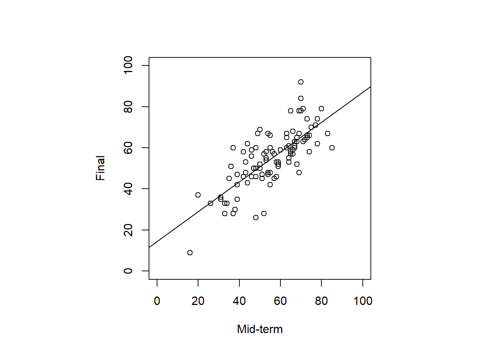
信頼区間も可視化
- 最尤推定法
stats::confint(model.ls, level = 0.95) 2.5 % 97.5 %
(Intercept) 7.0442767 21.982321
mid 0.5966093 0.854701- ベイズ推定
rstanarm::posterior_interval(model.b, prob = 0.95)["mid", ] 2.5% 97.5%
0.5979704 0.8552482 new <- data.frame(mid = seq(1, 100, 1))
pred <- stats::predict(model.mlm, newdata = new, se.fit = T,
level = 0.95, type = "response")
confidence <- data.frame(
fit = pred$fit,
lower = pred$fit - 1.96 * pred$se.fit,
upper = pred$fit + 1.96 * pred$se.fit
)- 点線が95%信頼区間
par(pty="s")
plot(dat.3[, 2:3],
xlim = c(0, 100),
ylim = c(0, 100),
xlab = "Mid-term",
ylab = "Final"
)
abline(model.ls)
lines(new$mid, confidence[, 2], lty = 3)
lines(new$mid, confidence[, 3], lty = 3)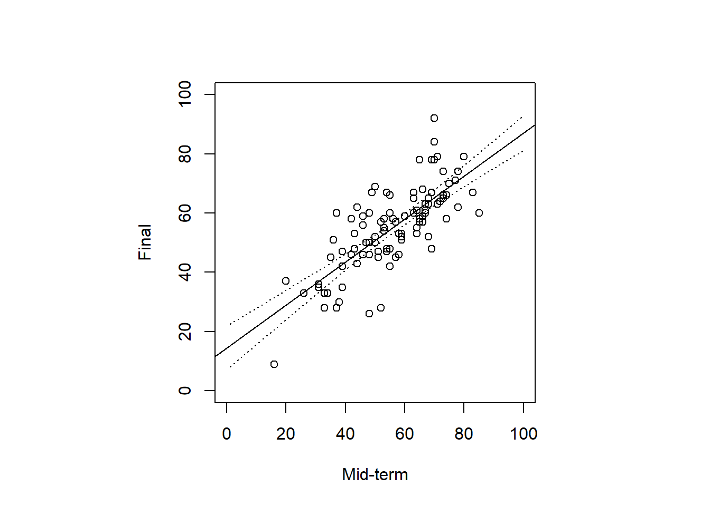
モデルの診断
予測値と残差の散布図（x軸 = 予測値、y軸 = 残差）
点は、点線に対して、ランダムに散らばっていればよい。赤い線は残差を説明する回帰曲線で、点線（残差0の線）と重なっているほど良いモデル。
残差の絶対値が大きいデータフレームの行番号を表示している
par(pty="s")
plot(model.mlm, which = 1)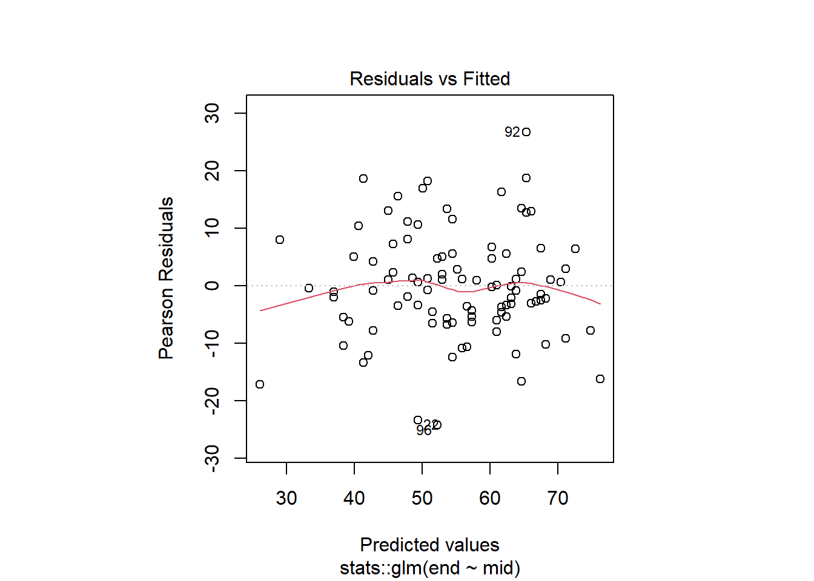
Q-Q（quantile-quantile）プロット（x軸 = 標準正規分布の分位点、y軸 = 残差の分位点）
正規分布であれば、点線に重なる
- 残差の絶対値が大きいデータフレームの行番号を表示している
わかりやすいアニメーション（参考）
par(pty="s")
plot(model.mlm, which = 2)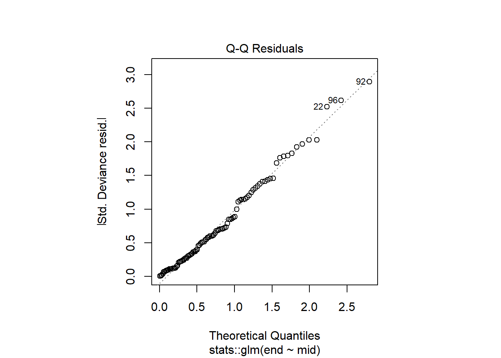
acf関数で残差の独立性を確認自己相関係数：一つ前のデータとの相関を示す。Lagはデータの数の半分になる
引数に
plot = Tでコレログラムを描画- ラグ0は係数1になる。
- 青い点線は帰無仮説「自己相関係数が0」の95%信頼区間。この中に線が収まっていれば、自己相関がないと判断する
stats::acf(model.mlm$residuals, plot = F)
Autocorrelations of series 'model.mlm$residuals', by lag
0 1 2 3 4 5 6 7 8 9 10
1.000 0.142 0.054 -0.046 -0.292 -0.214 -0.338 -0.053 0.014 0.009 0.208
11 12 13 14 15 16 17 18 19
0.181 0.047 0.125 -0.118 -0.020 -0.185 -0.086 -0.018 -0.095 stats::acf(model.mlm$residuals, plot = T)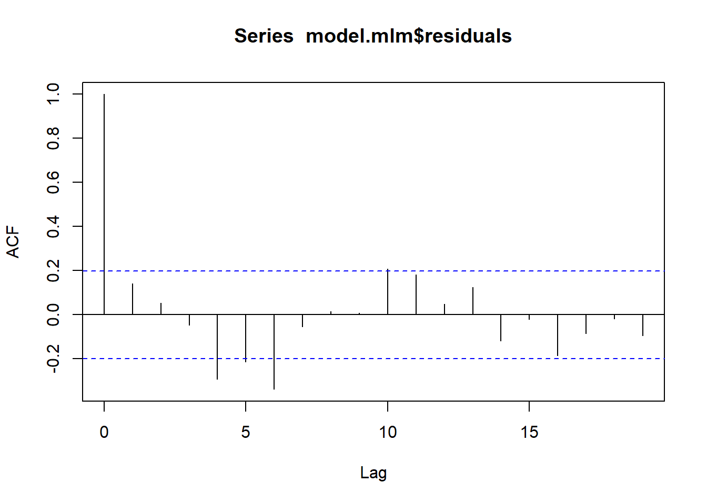
論文への記載
中間試験の得点から学期末試験の得点を予測するため、回帰分析を行った。その結果、係数は統計的に有意であった（b = 0.73 [0.60, 0.85], SE = 0.07, p < .001）。係数は分散の57 %を説明していた（( R^2) = 56.7 %, 調整 ( R^2) = 56.2 %）。
（結果に対し謙虚）平均して、中間試験の得点が1点差の学生を比較した際、中間試験の得点が1点高い学生は、低い学生に比べ、期末試験の得点が0.73点高い。
（因果関係を匂わせており不正確）中間試験の得点が1点高くなるほど、期末試験の得点は0.73点高くなる
次週までの課題
課題内容
小テストに向けて今回の内容を復習する。必ず手でコードを入力してRを実行する。
（
pokemon_data.csv）をもとに、任意のデータに対して単回帰分析を行い、その解釈を本講義内で確認した書き方報告する。データの中身の確認や記述統計、データの可視化なども含めること。
- Rで数値を出力するだけでなく、それぞれの質問への回答を高校生にもわかりやすく文字で記載してください。
提出方法
- TACT上で提出。
- 締め切りは今週の木曜日まで
参考文献
- 📚小杉（2018）『言葉と数式で理解する多変量解析入門』北大路書房
- 📚小林・濱田・水本（2020）『Rによる教育データ分析入門』オーム社
- 📚清水（編著）（2021）『心理学統計法 (放送大学教材 1638)』放送大学教育振興会
- 📚南風原（2002）『心理統計学の基礎―統合的理解のために』有斐閣アルマ
- 📚平井・岡・草薙（編著）（2022） 『教育・心理系研究のためのＲによるデータ分析―論文作成への理論と実践集』東京図書
- 📚Gelman, Hill, & Vehtari (2020) Regression and Other Stories, Cambridge University Press
- 📄野呂・和田 (2015) 統計実務におけるレンジチェックのための外れ値検出方法， 総務省統計研究所 『統計研究彙報』, (72), 41-54
- 📄吉田・村井 (2021) 心理学的研究における重回帰分析の適用に関わる諸問題， 心理学研究, 92(3), 178-187.
- 💻＜学習シリーズ＞線形モデル編：単回帰分析
- 💻最小二乗法と最尤法
- 💻最小二乗法は誤差を正規分布と仮定した最尤推定である
- 💻正規分布における区間推定・検定と線形単回帰における区間推定・検定の関係
- 💻【統計学】Q-Qプロットの仕組みをアニメーションで理解する。
- 💻内生性・交絡 revisited：説明変数と残差と誤差の相関をのんびり眺めるの巻
- 💻ポケモンで学ぶデータ分析｜データの中身を知ろう
- 💻予測値と残差
- 💻Rで回帰分析① ―単回帰分析, lm関数, 残差プロット, Q-Qプロット―
- 💻R の線形回帰 lm 関数の実装を辿る2024/04/28に公開
- 💻Sum of residuals using lm is non-zero